Trois procédés, un parc pour la série : frittage laser et SAF à lit de poudre pour la série, FDM pour les polymères techniques. Le procédé, c'est la pièce qui le décide, et nous vous le disons dans le devis. Un seul principe pour commencer : nous vous disons aussi quand ce n'est pas intéressant.
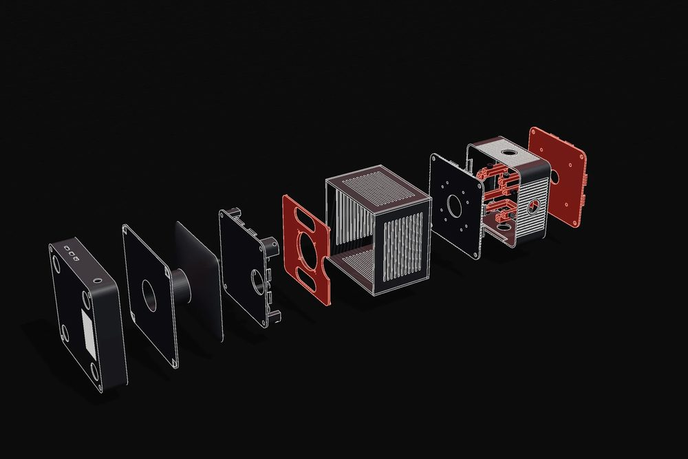
| Procédé | Parc · chambre | Matériaux | Point fort | Quand le choisir |
|---|---|---|---|---|
| SLSfrittage laser | EOS, jusqu'à la P770700 × 380 × 580 mm | PA2200 (PA12), PA11, TPU 90A | aucun support : pièces imbriquées dans la chambre, parois minces, canaux internes, la grande pièce entière | la série en polyamide, jusqu'à 700 mm ; finitions F0 à F3 |
| SAFSelective Absorption Fusion | lit de poudre | polypropylène | coût à la pièce stable et répétabilité sur les séries moyennes et grandes | acides, bases et détergents ; séries moyennes et grandes |
| FDMdépôt de filament | Stratasys914 × 610 × 914 mm | Nylon 12CF, Ultem 9085, Ultem 1010 CG | rigidité, température et classement au feu au niveau du matériau, même sur de grandes pièces | le cahier des charges demande le feu ou une rigidité extrême ; finitions F0 à F2 |
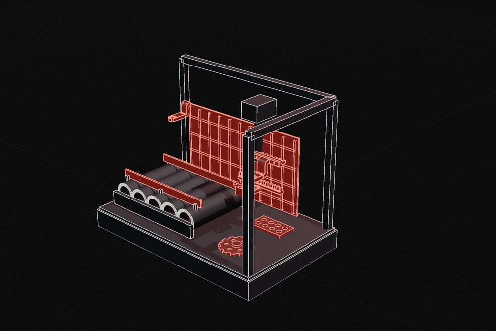
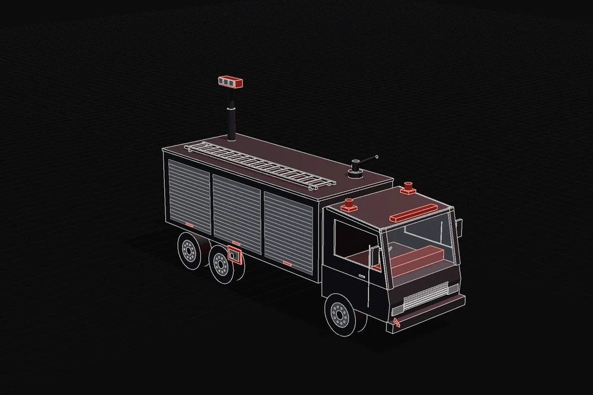
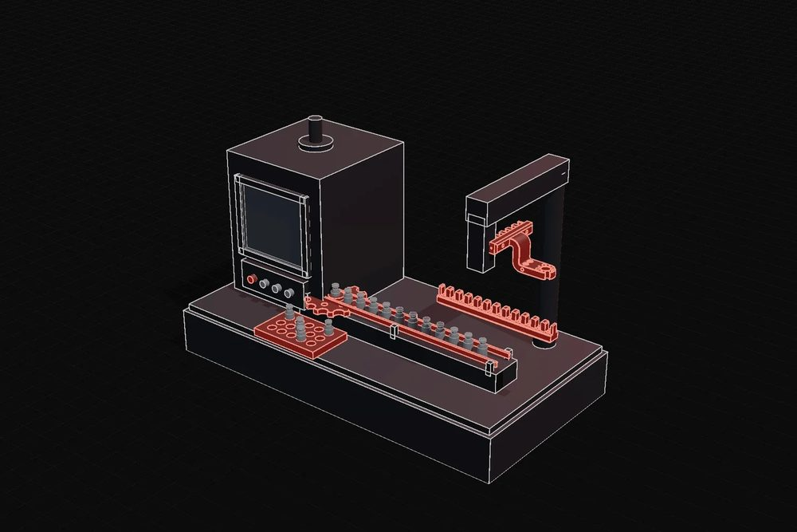
Dessins techniques à partir de modèles CAO de référence, pas de commandes : en rouge, les pièces que nous produisons en additif.
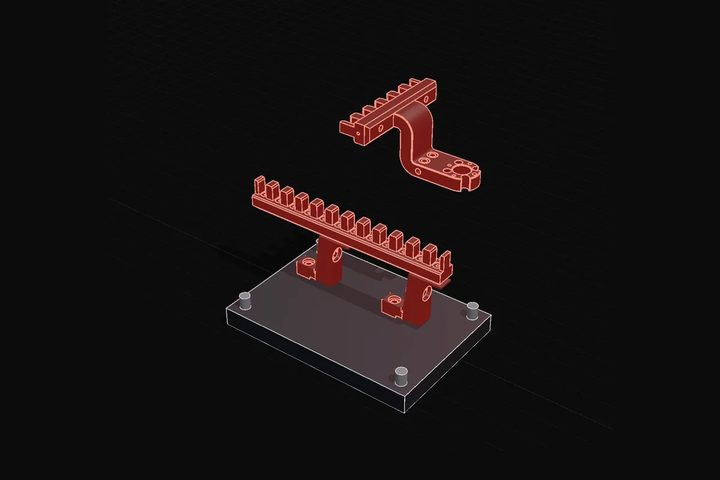
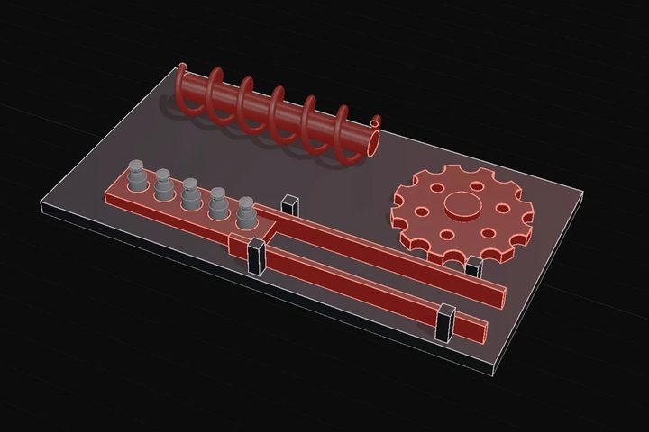
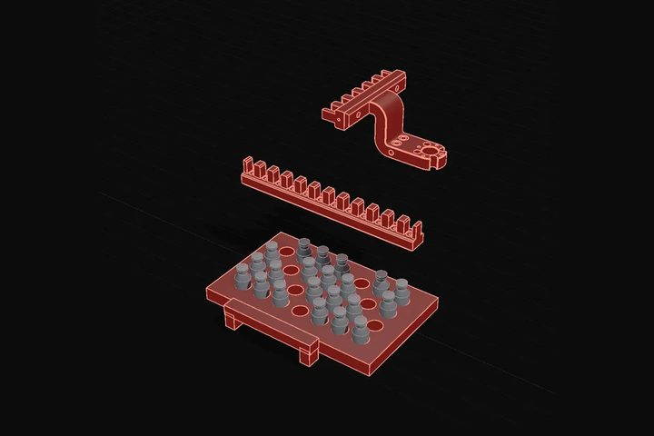
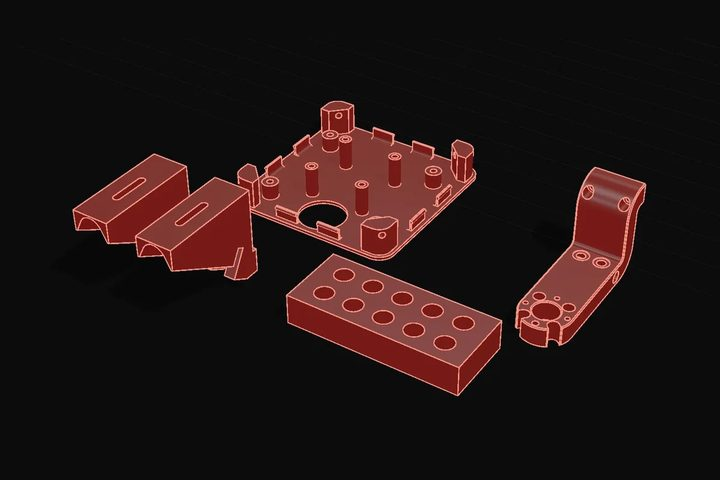
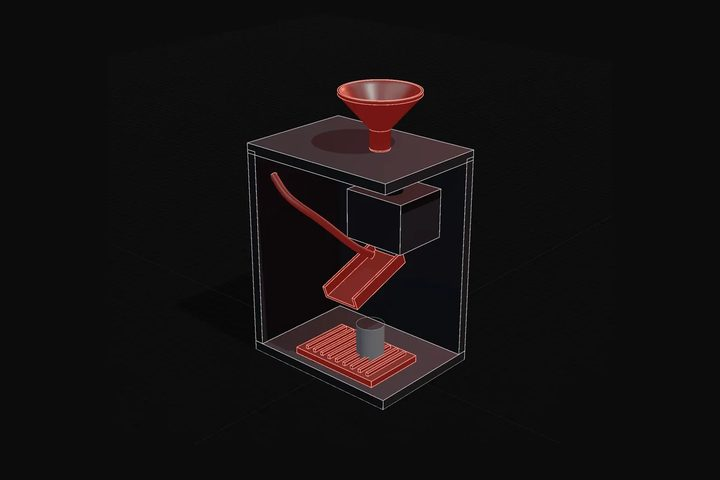
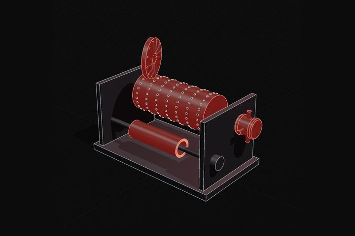
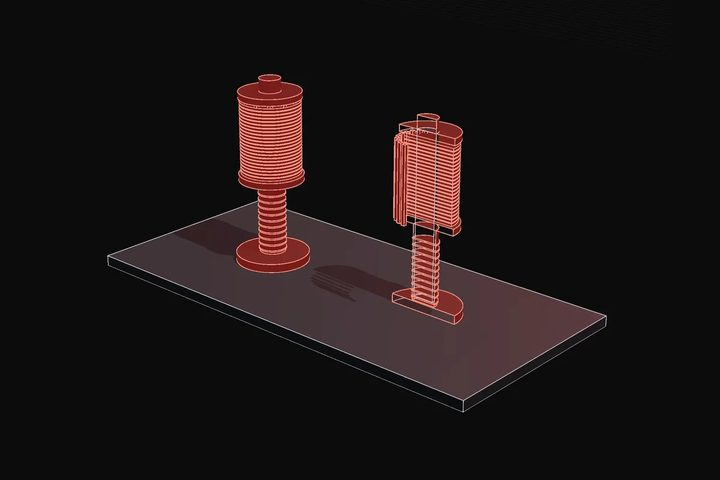
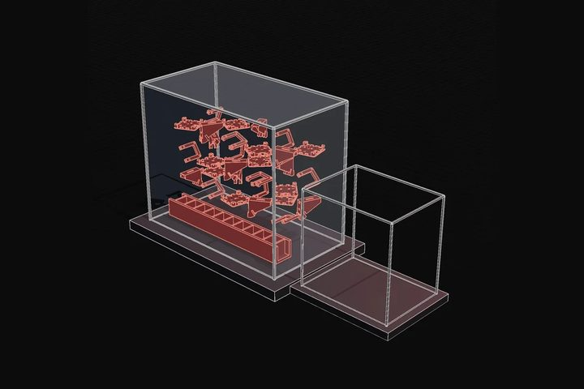
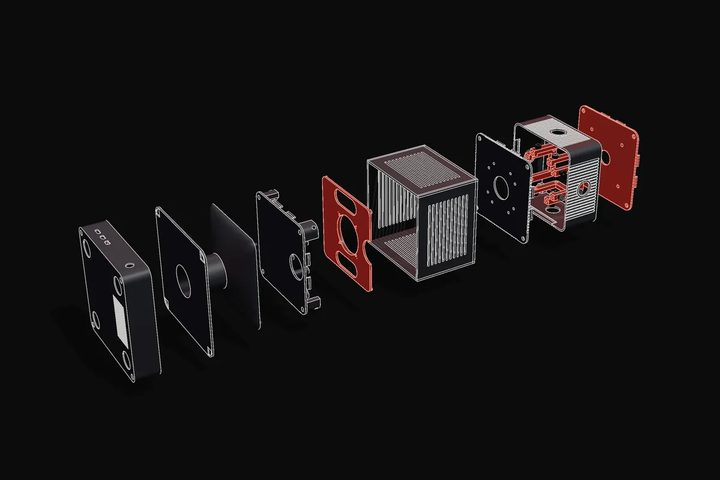
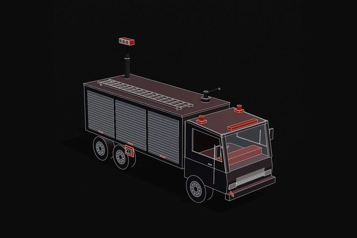
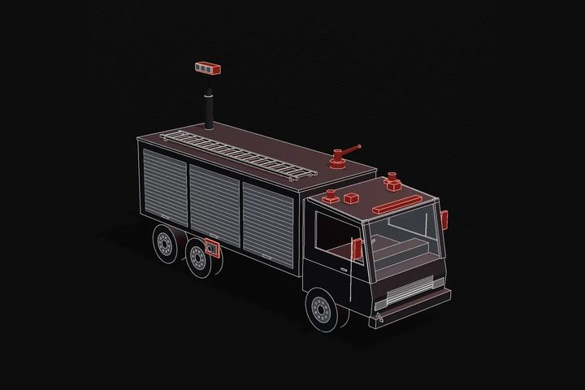
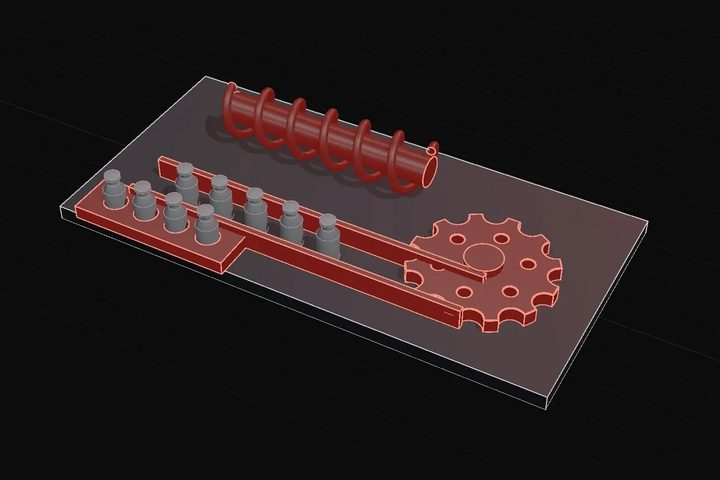
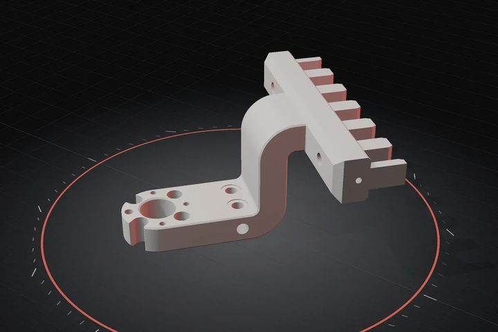
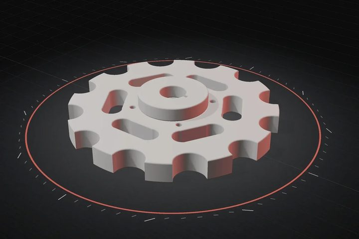
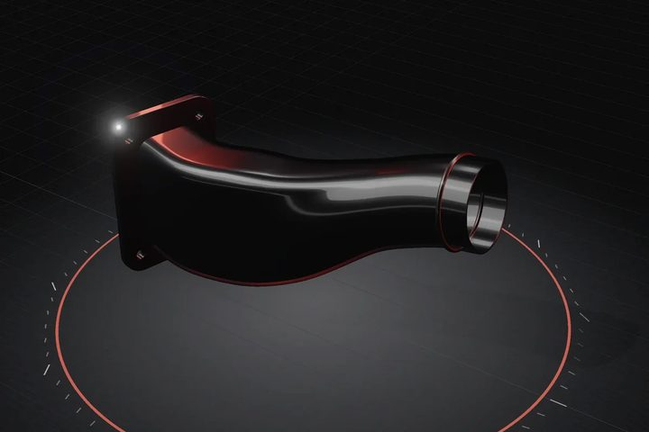
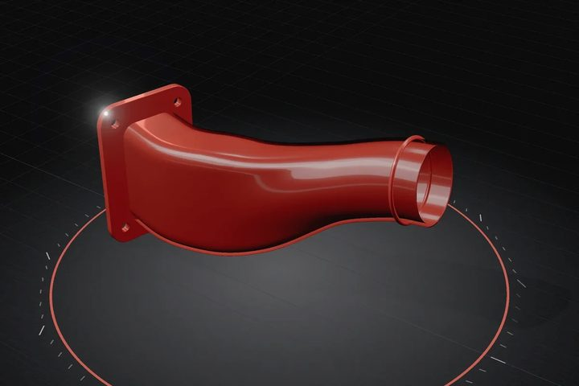
Presque toutes ces familles ont leur fiche d'application : demandez-la, ou envoyez-nous le STEP de votre pièce.
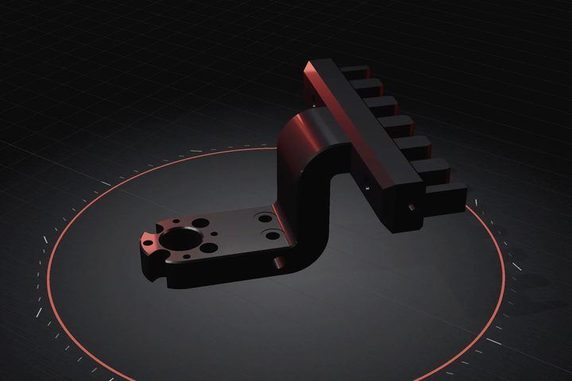
La même patte porte-capteurs de F0 à F3, rendu à partir du modèle 3D ; en F2 la couleur se fait à spécification, exemples RAL 9005, 3020, 5010, 7040, 9003.
| Poste | Additif en série | Moule |
|---|---|---|
| Outillage | aucun : production à la signature de la commande | à payer et à amortir avant la première pièce |
| Variantes | la variante est un fichier, en production en quelques jours | un nouvel outillage pour chaque variante |
| Coût à la pièce | stable du n° 1 au n° 50 | baisse avec les volumes, après l'amortissement |
| Pièces de rechange | stock numérique, réapprovisionnement identique au lot | étagère, minimums de commande, moule à conserver |
| Géométrie | canaux et fonctions dans le corps de la pièce, pas de dépouille | contraintes de dépouille et de noyaux |
| Grands volumes | au-dessus des volumes de moule, ce n'est pas intéressant | le moule revient, et nous vous aidons à faire le passage |
La pièce structurelle en métal reste en métal : si besoin, nous l'orientons vers notre réseau de partenaires qualifiés.
À plan perdu, on part de la pièce : relevé 3D, reconstruction du modèle, et la pièce de rechange revient en stock, numérique cette fois.
Lot et job reportés sur la pièce de série (Q2) ; certificat du producteur du matériau là où le cahier des charges le demande (Q3).
Le STEP ou le STL du composant suffit : fourchette de prix indicative sur le fichier, confirmée par une personne sous 24 heures ouvrées. Le prix réel dépend aussi du remplissage de la chambre.
Sous le seuil d'amortissement du moule : lots de un à cinquante, séries de dizaines ou de centaines par an, variantes par client. Au-dessus des volumes de moule, le moule revient.
Le STEP du composant, ou le STL. Pour un aménagement complet, le STEP AP242 de l'ensemble, ou le GLB, avec les noms des pièces : sans plans 2D.
Selon la finition : de F0, brut technique, à F2, peint 2K liquide à la couleur exacte, jusqu'à F3, qualité salle blanche. Avec des jeux sous 0,3 mm, l'ajustement entre pièces peintes n'est pas garanti.
Là où le cahier des charges le demande, on monte à l'Ultem 9085 : UL94 V-0, FAR 25.853, EN 45545-2 au niveau du matériau. Les essais sur le composant fini se construisent ensemble.
ISO 14000 · NATO NCAGE AW479 · Stratasys Partner · EOS · DyeMansion